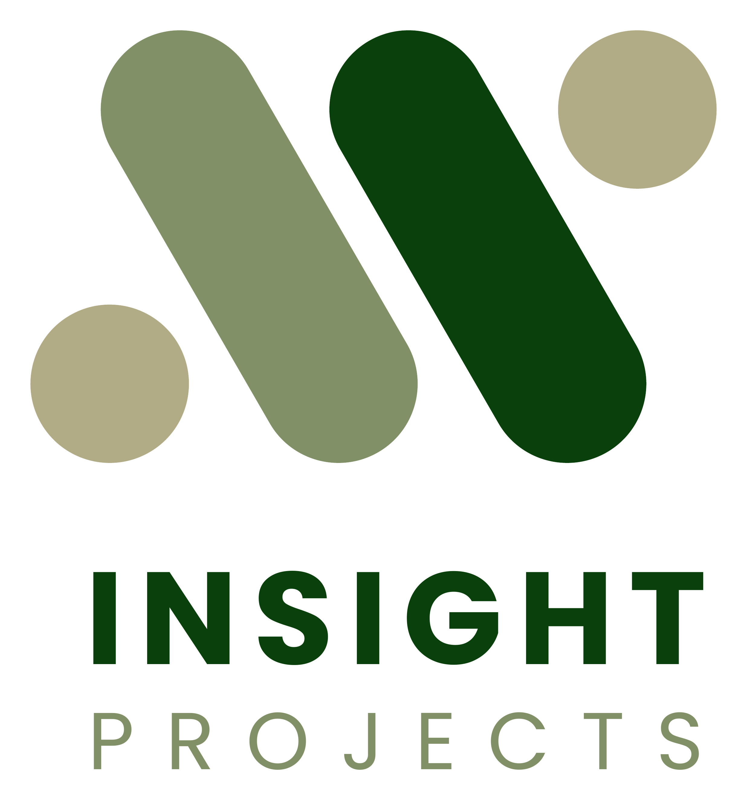
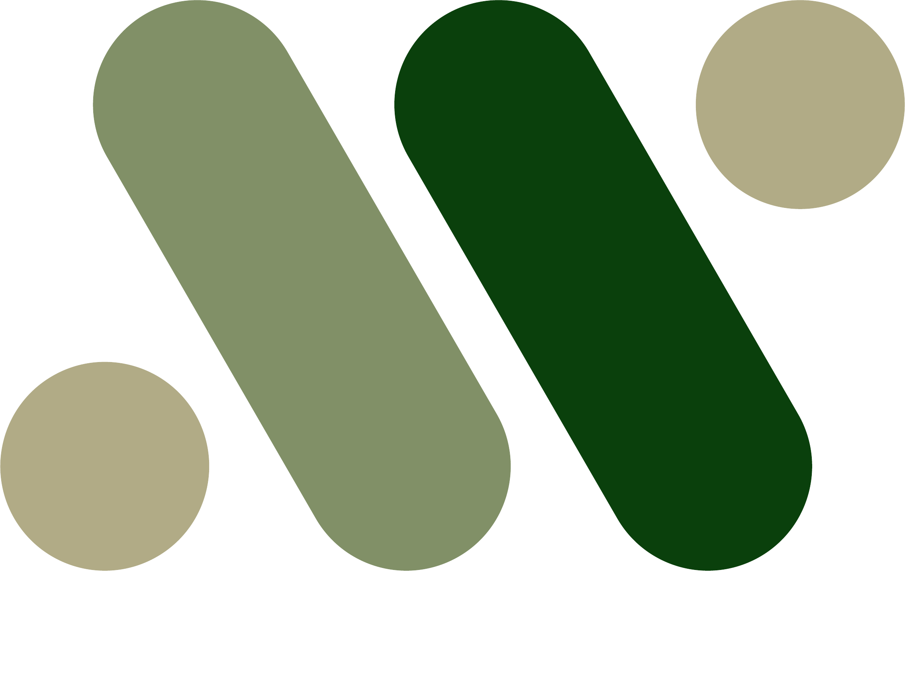
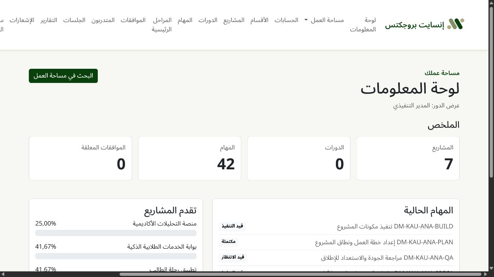
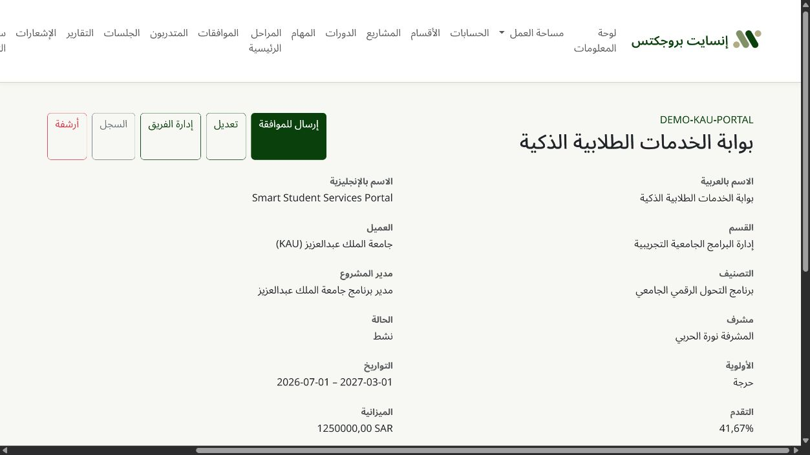
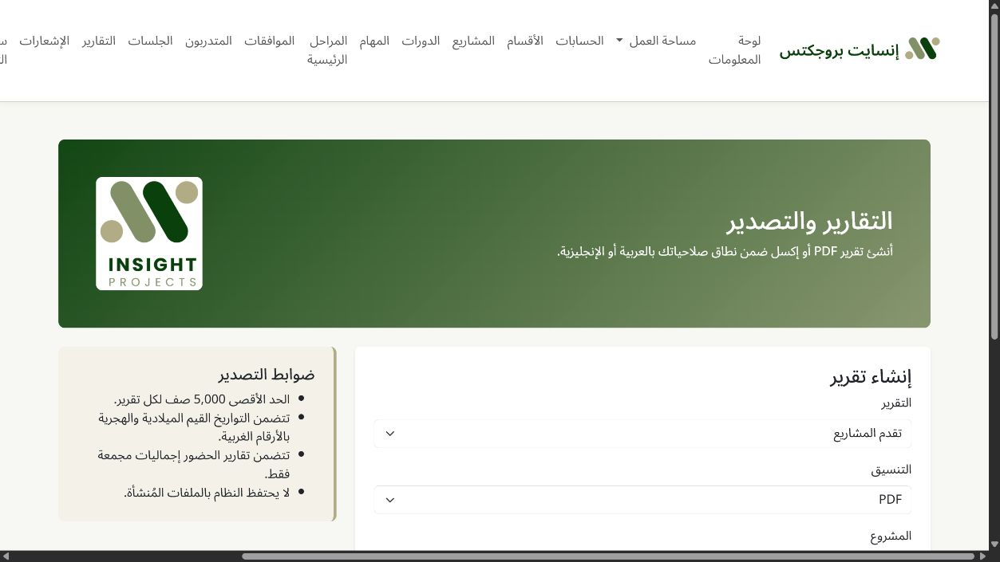

CTO briefing3-minute overview
Insight Projects
From program plan
to verified result.
One Arabic-first workspace for programs, projects, tasks, people, approvals, attendance, and executive reporting.
إنسايت بروجكتس
Arabic + English
University-ready workflow

Controlled pilot proposal01 / 05

Insight ProjectsWhy it mattersThe delivery gap
Complex programs become difficult to control.
1
Plans, tasks, attendance, and evidence live in separate places.
2
Responsibility and approval status are unclear until a deadline is missed.
3
Leadership receives late or manually assembled reports.

One source of operational truth02 / 05
Insight ProjectsOperating model
How work is organized
Program → projects → tasks → accountable people
ProgramUniversity objective and governance
→
ProjectsMultiple initiatives with separate owners
→
TasksShared patterns plus project-specific work
→
PeopleShared specialists or single-project members
KAUKSUKKUبيانات تجريبية خيالية
Three fictional university programs already modeled for the demo03 / 05
Insight ProjectsTeam experience
A controlled daily flow
Update. Approve. Report.
1
Employee updates the taskStatus, progress, comments, evidence, and assignment.
2
Two-stage approvalSupervisor first, then Project Manager; decision history remains traceable.
3
Leadership sees the resultDashboards, overdue work, PDF/Excel reports, and audit records.


First-class Arabic RTL with English LTR available04 / 05
Insight ProjectsCTO readiness
A credible foundation
Built to pilot safely, then harden for production.
Secure accessRole and object-level permissions, CSRF protection, private file model, immutable audit history.
Deployable stackDjango 5.2 LTS, PostgreSQL, Docker, Gunicorn, Redis/Celery when background work is needed.
Arabic-firstReviewed RTL/LTR behavior, bilingual labels, mixed Arabic/English content, Hijri + Gregorian dates.
173 testsLatest full local verification: 159 non-browser + 14 Playwright browser tests passed.
The ask
Approve a controlled pilot for one program using fictional or anonymized data and agreed success measures.
Named pilot owner and users
Security and data-residency review
Arabic UAT and operational sign-off
Honest status: feature-complete locally; production gates remain explicit05 / 05